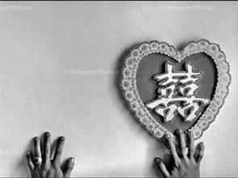
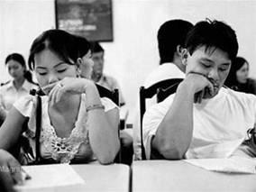

Tiền Phong - Tôi bước vào đời với vết nhơ nhuốc đầu tiên bị từ hôn. Tôi càng không thể mang bụng bầu quay lại Việt Nam chỉ sau mấy tháng lấy chồng.
Tôi đã để cho bố mẹ tôi chịu quá nhiều xót xa, mang lại nhục nhã cho gia đình một lần rồi. Lý trí và tình cảm, sự tự trọng đã dồn tôi tới bước đường cùng. Tôi buộc phải chấp nhận.

Thúy đưa tôi tới bác sĩ gần nhà. Đây cũng là ông bác sĩ đã khám cho Thúy khi cô mang bầu mấy năm trước. Ông bác sĩ cũng kiệm lời, không hỏi han nhiều. Chắc ông quen với việc, mỗi bà bầu Việt Nam là một kho tủi hờn, mà ông chẳng muốn thành túi trút những bi kịch ngoại quốc.
Ngày hôm sau, bất ngờ Thúy gọi lại cho tôi cầu cứu:
- Ngọc qua đây, giúp tao chở con đi bệnh viện, chồng tao đánh nó rơi từ trên lầu xuống!
Trời, tôi tự tiện đến nhà Thúy, chắc chồng nó lại đánh nó rơi từ trên lầu xuống như con nó thôi. Nhưng tôi vẫn phải đi. Lúc đi bộ xuống cầu thang, tôi gặp Thán đi lên. Tự dưng buổi chiều rảnh rỗi ông về nhà.
Thán giữ tôi lại, kêu lên nhà. Trong lúc cấp bách tôi vội vã:
- Cho em đi một chút, bạn em cần em giúp. Chồng nó đánh con nó bị thương.
- Đã bảo chuyện riêng nhà người ta, không ai có quyền xía vào!
- Em xin anh, cho em đi, bạn em cần em giúp! Cô ấy là cô dâu Việt Nam. Em chỉ đi với nó đến bệnh viện rồi em về ngay.
- Mày không nghe lời tao thì mày đi luôn đi, đừng về nữa!
Trời rét buốt năm độ, đã gần tết âm lịch. Tôi xốc mũ áo lông lên vượt qua ngã tư, đi tắt ngang qua công viên tới nhà Thúy. Thúy đã kêu taxi ôm con vào viện, tôi đứng ở tầng một, không dám gọi chuông cửa nhà Thúy.
Tôi co tay che cái thai trong bụng, như muốn che chở con mình. Nấn ná một lúc, gọi điện cho Thúy hỏi thăm tình hình trong bệnh viện rồi tôi về. Thương nhau thì ít gặp nhau, tránh cớ cho chồng Thúy vũ phu.
Khi tôi quay về, tôi thấy quần áo, va li, đồ đạc của tôi bị vứt tung tóe ngoài đường. Tôi bấm chuông cửa, Thán không cho tôi vào nhà nữa. Trời ơi!
Tôi đứng trước cái bảng chuông treo trên cửa sắt của khu chung cư khóc ngất.
Khóc cho tới khi đêm tối. Những người Đài Loan trong khu chung cư tan sở về, tò mò nhìn tôi. Có người ái ngại hỏi han, có người kêu chồng tôi xuống giải quyết, nói, không sống với nhau nữa thì viết đơn li dị đi! Chồng tôi giận dữ nói với họ từng tràng tiếng Đài mà tôi không hiểu, sau đó bỏ lên lầu.
Tuy nhiên ông không đóng cửa, tôi đi theo. Những người Đài Loan tốt bụng gom quần áo của tôi mang lên cửa nhà trả lại. Họ nói, tôi nên nghỉ ngơi giữ sức khỏe cho em bé, đừng gây sự với chồng nữa.
Nếu biết tôi cưỡng ý chồng, cố đi giúp bạn, chắc họ sẽ khuyên nhủ thêm nhiều nữa. Họ sẽ không thể hiểu những người phụ nữ Việt Nam như tôi đang nghĩ gì. Những người vẫn mang tâm thế người Việt ra nước ngoài. Nên bỡ ngỡ với xã hội hiện đại đầy quy tắc này.
Trong đêm ba mươi Tết, pháo hoa nở khắp nơi trên đảo Đài Loan. Những người qua đường sung sướng dìu nhau đi ăn, đi tới sân vận động Đài Trung dự lễ hội tất niên.

Tôi ngồi một mình trong công viên lạnh giá, lòng trống rỗng không nghĩ ngợi gì.
Tôi chờ An Kỳ ra khỏi nhà tôi.
Tôi chờ tới năm giờ sáng. Sương rơi xuống ướt đẫm chiếc ghế quanh tôi. Sương của sáng sớm tinh mơ ngày mùng một tết, sao cay đắng. Chua chát như phận đàn bà xa xứ.
Tôi bước vào đời với vết nhơ nhuốc đầu tiên bị từ hôn. Tôi càng không thể mang bụng bầu quay lại Việt Nam chỉ sau mấy tháng lấy chồng. Tôi đã để cho bố mẹ tôi chịu quá nhiều xót xa, mang lại nhục nhã cho gia đình một lần rồi. Lý trí và tình cảm, sự tự trọng đã dồn tôi tới bước đường cùng. Tôi buộc phải chấp nhận.
Tôi ngồi chờ người tình của chồng tôi bước ra khỏi cuộc đời tôi.
Tháng thứ tám trôi qua trong bất an, tháng thứ chín, tôi đã có thói quen tính thời gian bằng tuổi con tôi. Con tôi chín tháng, nó sắp chào đời.
Tôi đã quen nhiều cô dâu Việt Nam hơn, những buổi đi ra ngoài cùng Thúy, chúng tôi không đánh bạc, chỉ ngồi ăn những món Việt Nam ở những quán nhỏ của cô dâu Việt.
"Còn tôi, tôi khốn khổ xoay xở với bản thân mình và đứa bé. Con tôi da nhăn, khóc to và trán rộng.
Tôi lo lắng ngắm con ngủ, cố tìm kiếm trên gương mặt nó có dấu hiệu ngũ quan dị tướng như cha nó không"
Tôi thích món trứng vịt lộn mà chồng tôi ghê sợ. Giờ đây tôi mới thấy, những cô dâu đồng hương mới tình cảm làm sao. Các cô cho con tôi quần áo tã lót, những bọc bỉm chưa dùng hết, bình sữa, sữa bột, những thứ lặt vặt thừa thãi sau khi con cái họ đã lớn hơn.
Ở Việt Nam tôi vẫn coi rẻ những cô gái quê lên thành phố túm tụm ở công viên chờ người xem mặt. Đi qua các đám cưới tập thể ở Đầm Sen của những đôi chồng Đài vợ Việt vẫn cảm thấy xốn xang thương hại và bất nhẫn. Giờ họ lại xốn xang thương hại và bất nhẫn thay cho tôi.
Tôi thấy có những ông chồng Đài Loan dù kinh sợ trứng vịt lộn như sợ xác chết, nhưng vẫn đến mua chục trứng về cho vợ ăn, còn mua thêm mớ rau răm, thứ rau ngay cả nhiều người Đài Loan cũng không biết tên nó là loại rau gì.
Giờ đây tôi đã biết hạnh phúc và cay đắng là thế nào khi ngắm nhìn hạnh phúc của người khác. Những thứ nhỏ nhoi mà vợ với chồng chia sẻ trong cuộc sống.
Câu cửa miệng mà cô dâu Việt Nam khi mới gặp nhau làm quen sẽ là: Mỗi tháng chồng cho bao nhiêu tiền gửi về Việt Nam? Tiền nhiều tức là chồng yêu.
Các ông chồng lấy vợ Việt khi mới gặp nhau làm quen thì lại hỏi: Quê vợ ở tỉnh nào? Chúng ta có đồng -hương- vợ với nhau không? Nếu có tay bắt mặt mừng.
Có một buổi, ông taxi gần khu Đại Nhã thỉnh thoảng chở tôi và Thúy đi đã hỏi tôi, trong một ngày mưa, tôi đi một mình đến quán ăn Việt Nam.
- Chồng cô đâu? Sao chồng cô không chở cô bao giờ? Tôi nói, chồng tôi có bồ. Và chồng tôi không yêu tôi nữa. - Vậy cô định thế nào? Tôi nhìn những gạt nước mỏng manh lướt qua cửa kính trước mũi xe, trầm ngâm. - Đẻ con xong, tôi sẽ đi làm nuôi con tôi. - Vợ tôi đẻ xong đi làm rồi đi mất hẳn!
Tôi nhìn ông lái xe. - Vợ tôi cũng người Việt Nam, quê Cần Thơ.
Tôi nói:
- Chắc cô ấy cũng có nỗi khổ riêng. Người phụ nữ Việt Nam có thể bỏ chồng chứ không thể nào bỏ con.
Tôi vừa bước chân vào quán bỗng dưng thấy đau bụng quá, chợt nghĩ nếu trở dạ bây giờ thì biết xoay xở thế nào. Thấy mặt tôi tái đi đứng tựa cánh cửa kính, chống hai cánh không cho nó khép lại, mọi người trong quán đều quay ra nhìn tôi.
- Lạy trời lạy phật, xin cho hai mẹ con con được mẹ tròn con vuông. Con xin ăn chay hai tháng để tạ ơn trời phật.
Tôi lẩm bẩm, và trong cơn đau cố gắng cầu xin thêm lần nữa bằng tiếng Hoa. Tôi không biết trời phật ở đây có biết tiếng Việt không, có nghe thấu lời tôi cầu xin hay không. Nên tôi cố gắng niệm thêm một lần bằng tiếng Hoa bập bẹ những cầu xin thê thảm ấy.
Chủ quán tên Huệ dặn chồng ở lại rồi dìu tôi ra ngoài vẫy taxi, vừa may, ông taxi ban nãy vừa quay đầu định qua ngã tư ngay trước cửa. Chiếc xe vàng lộn ngay sang phía đường ngược chiều, rồi phóng như bay tới bệnh viện Dung Tổng.
Thật may mắn, chồng tôi vẫn mua bảo hiểm y tế và bảo hiểm xã hội cho tôi ngay từ ngày đầu tôi bước chân sang Đài Loan, vì thế, lúc lâm bồn, tôi vẫn được hưởng những chăm sóc tốt nhất của bệnh viện và bác sĩ. Tôi phải mổ, vì thai ngôi ngược.
Cũng vì mổ, suốt một tháng tôi không có sữa cho con. Tôi sụt mười bảy ki lô gam, da bọc xương.
Tôi không sao nuốt nổi những món ăn dành cho sản phụ của Đài Loan. Món nào cũng có rượu, có gừng, có thuốc bắc, có thịt đầy, bóng mỡ. Rau hầm nát nhoét và cơm nếp đen sì, ruốc thịt trộn đường.
Những sản phụ Đài Loan rời bệnh viện được đưa tới một nhà chăm sóc y tế tư nhân đặc biệt. Những món ăn cho mẹ mới sinh bé được kê tỉ mỉ với một bảng dinh dưỡng khoa học. Và họ quen với khẩu vị dân gian với những món nồng mùi thuốc bắc của Đài Loan.
Còn tôi, tôi khốn khổ xoay xở với bản thân mình và đứa bé. Con tôi da nhăn, khóc to và trán rộng. Tôi lo lắng ngắm con ngủ, cố tìm kiếm trên gương mặt nó có dấu hiệu ngũ quan dị tướng như cha nó không.
Thán chỉ nhìn mặt con một lần. Lần thứ hai là sau đó hai tuần.
Tôi chỉ vào buồng tắm để tắm gội một lúc, thế mà quay ra đã không thấy con trai tôi đâu. Thán cũng đi mất.
Tôi gào lên, tôi gọi điện cho chồng nhưng chồng tôi không nghe máy, tôi gọi cảnh sát, chỉ mười phút sau cảnh sát Đài Loan đập cửa vào đầy nhà tôi. Họ cho rằng, chắc chồng tôi đã bế con đi.
Buổi tối Thán mới về đến nhà. Chồng tôi cho biết đã lái xe một mạch lên Đài Bắc, mang thằng con lai đỏ hỏn cho một gia đình người bạn quen biết.
- Con tôi đâu? - Tôi chỉ còn biết khóc thảm thiết.
Cảnh sát quay trở lại, yêu cầu chồng tôi ký vào bản tường trình và cam đoan mang con trả lại cho tôi. Chồng tôi sợ bị kiện, đành ký giấy và cam đoan mang con quay lại trong vòng hai tư tiếng.
Quay lại tôi, chồng tôi nói:
- Đem cho nó đi, người ta sẽ cho một số tiền lớn.
- Ông không cần nó nhưng nó là con tôi. Sao ông không mang cho con của bà vợ cũ, bà ấy có những ba đứa. Còn tôi chỉ có một đứa đầu lòng!
- Nếu mày không cần tiền thật, thì tự nuôi con đi, tao sẽ không cho bất kỳ một Đài tệ nào!
Tôi thấy tôi đã cứng rắn hơn, nhẫn tâm hơn, kiên cường hơn. Có điều mỗi lần phải cứng cỏi là một lần có nhát dao vô tình đâm vào tim tôi đau nhói...